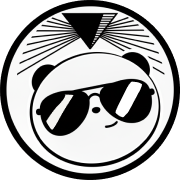

Core
BambooHR
HR Platform
- Employee, payroll, benefits data
- Compliance status
- Ground truth for all client work
Exploring
Google Calendar / Outlook
Schedule
- Next meeting per client
- Trigger proactive prep
- Deadline awareness
Exploring
Attention
Meeting Recordings
- Decisions & action items
- Unresolved questions
- Close the loop between meetings
Exploring
Google Docs
Customer Profile Doc
- Real source of truth per client
- Auto-append call summaries
- Richest context for prep briefs

Pandopticon
Intelligence layer — connection, not extraction
Exploring
Salesforce
Task / Case Management
- Open tasks & cases per client
- Update status without switching apps
- Feed deadlines into prep briefs
Exploring
Google Sheets
Project Plans
- Live-linked client project plans
- Due dates drive agent prioritization
- Write back date changes from meetings
Exploring
Google Drive
File Context
- Client checklists, policies, SOWs
- Agents reference real docs
- Stop re-creating existing work
Exploring

Gmail
Conversation Monitor
- Client context from email threads
- Eliminate AI context gap
- Draft replies from Pandopticon
Exploring
Slack
Team Communication
- Monitor client-related channels
- Surface context for agents
- Post updates & notifications